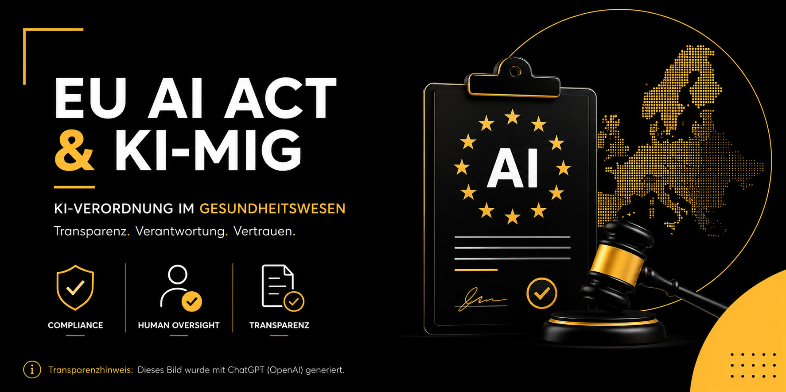

EU KI-Verordnung (AI Act) im Gesundheitswesen
KI-MIG in Kraft · Compliance & Umsetzung ab 02.08.2026

Gesetz zur Durchführung der EU-KI-Verordnung (EU) 2024/1689
Überblick
Das KI-Marktüberwachungs- und Innovationsförderungs-Gesetz (KI-MIG) ist das zentrale nationale Durchführungsgesetz zur Verordnung (EU) 2024/1689 über künstliche Intelligenz (EU-KI-Verordnung).
Es regelt die behördliche Infrastruktur, die Deutschland für die Vollziehung der direkt anwendbaren EU-Verordnung benötigt.
Das Gesetz schafft keine neuen materiellen Pflichten für Unternehmen oder Bürger – diese ergeben sich ausschließlich aus der EU-KI-VO selbst.
Es benennt die zuständigen deutschen Behörden, regelt deren Befugnisse, organisiert die Zusammenarbeit und definiert das nationale Bußgeldsystem.
Es etabliert eine bundesweit koordinierte Marktüberwachung unter Führung der Bundesnetzagentur, sichert eine einheitliche Rechtsanwendung, fördert Innovation durch Reallabore und Kompetenzbündelung und schafft die organisatorischen Voraussetzungen für die Durchsetzung des risikobasierten EU-KI-Regimes.
Kernprinzip des Gesetzes
Bestehende Behörden- und Aufsichtsstrukturen werden genutzt, dort wo sie fehlen, übernimmt die Bundesnetzagentur (BNetzA) als zentrale Auffangbehörde, zentrale Anlaufstelle und zentrale Beschwerdestelle.
KI-Expertise wird in einem Koordinierungs- und Kompetenzzentrum gebündelt, um knappe Fachkräfte effizient einzusetzen.
Legislativer Hintergrund
Die EU-KI-Verordnung trat am 1. August 2024 in Kraft. Nach Art. 70 Abs. 1 EU-KI-VO mussten die Mitgliedstaaten bis zum 2. August 2025 mindestens eine notifizierende Behörde und mindestens eine Marktüberwachungsbehörde (darunter eine zentrale Anlaufstelle) benennen. Mit dem KI-MIG hat Deutschland diese Vorgabe – mit deutlicher Verspätung, aber rechtzeitig vor dem entscheidenden Anwendungsdatum am 2. August 2026 – erfüllt.
Kurz vor diesem Stichtag hat zudem das sogenannte Digital-Omnibus-Paket der EU (Verordnung (EU) 2026/1744, in Kraft seit 27.07.2026) den Zeitplan der EU-KI-VO selbst noch einmal angepasst: Die vollen Pflichten für eigenständige Hochrisiko-KI-Systeme nach Anhang III wurden auf den 2. Dezember 2027 verschoben, für Hochrisiko-KI in regulierten Produkten (Anhang I, z. B. Medizinprodukte) auf den 2. August 2028. Am 2. August 2026 selbst werden vor allem die Transparenzpflichten (Art. 50), der volle Bußgeldrahmen und die einsatzbereite Marktüberwachungsstruktur scharf – dazu unten mehr.
1. Ausgangslage: EU-KI-Verordnung und nationaler Umsetzungsbedarf
Die EU-KI-Verordnung (AI Act) schafft einen einheitlichen Rechtsrahmen für Entwicklung, Inverkehrbringen, Inbetriebnahme und Verwendung von KI-Systemen in der EU. Der Rechtsrahmen folgt einem risikobasierten Ansatz (Verbote, Hochrisiko-Anforderungen, Transparenzpflichten, Innovationsförderung).
- EU-weit unmittelbar geltende Pflichten mit risikobasierter Systematik.
- Nationaler Umsetzungsbedarf insbesondere für Behördenstruktur, Marktüberwachung, Kooperation und Sanktionierung.
- Zielbild: Rechtssicherheit und praktikabler Vollzug ohne Doppelstrukturen.
2. Zielsetzung des Gesetzes
Das Gesetz dient der Durchführung der EU-KI-Verordnung und adressiert die operative Übersetzung in eine belastbare Vollzugs- und Aufsichtsarchitektur. Leitend ist ein innovationsfreundlicher und ressourcenschonender Vollzug mit bundeseinheitlichen Maßstäben.
- Innovationsfreundlich: klare Zuständigkeiten, schnelle Verfahren, Reallabor-Ansatz.
- Bürokratiearm: Nutzung bestehender Strukturen, Vermeidung redundanter Behördenwege.
- Einheitliche Rechtsanwendung: Koordination, Kompetenzbündelung, Kooperationsregeln.
3. Struktur des Gesetzes (Überblick)
Das Gesetz setzt organisatorisch an: Er benennt zuständige Behörden, regelt Zusammenarbeit, etabliert Innovationsförderung und schafft Bußgeld-/Durchsetzungsmechanismen.
- Artikel 1: KI-Marktüberwachungs- und Innovationsförderungs-Gesetz (KI-MIG).
- Artikel 2–4: Anpassung weiterer Rechtsnormen zur operativen Einbettung.
- Regelungsschwerpunkt: Behördenstruktur, Koordination, Sanktionen, Innovationsinstrumente.
4. Zentrale Governance-Architektur
- Zentraler Vollzugsanker für Querschnittsfragen und nicht-sektorale Bereiche.
- Klare Zuständigkeitslogik zur Minimierung von Reibungsverlusten.
4.1 Bundesnetzagentur als zentrale Marktüberwachungsbehörde
Die Bundesnetzagentur (BNetzA) wird als zentrale Marktüberwachungsbehörde verankert, soweit keine anderen Zuständigkeiten greifen.
- Bestandsstrukturen nutzen statt Neuaufbau einer Parallelaufsicht.
- Praktikabilität für Unternehmen durch bekannte Ansprechpartner und Verfahren.
4.2 Nutzung bestehender Marktüberwachungs- und Aufsichtsstrukturen
In vollharmonisierten Produktbereichen sollen die bereits zuständigen Behörden auch für KI-bezogene Marktüberwachung zuständig bleiben.
- Single Point of Expertise für methodische und technische Fragen.
- Bundeseinheitliche Maßstäbe in Aufsicht und Rechtsdurchsetzung.
4.3 Koordinierungs- und Kompetenzzentrum (KoKIVO)
Bei der Bundesnetzagentur wird ein Koordinierungs- und Kompetenzzentrum etabliert. Ziel ist die zentrale Bündelung von KI-Expertise.
- BSI (IT-Sicherheit), BfDI (Datenschutz), BKartA (Wettbewerb) als flankierende Instanzen.
- Kooperation statt Insellösungen – klare Schnittstellen und Zuständigkeitsgrenzen.
4.4 Einbindung weiterer Fachbehörden
Fachkompetenzen (z. B. IT-Sicherheit, Datenschutz, Wettbewerb) werden im Rahmen der jeweiligen Zuständigkeiten eingebunden.
5. Vollzugsprinzipien
Das Gesetz setzt auf innovationsfreundliche und ressourcenschonende Prozesse.
- Standardisierung: Wiederverwendbare Prüfmuster und harmonisierte Verfahren.
- Skalierbarkeit: Zentraler Kompetenzhub, dezentrale Ausführung.
- Prozessqualität: klare Verfahren für Aufsicht, Kooperation und Nachweisführung.
6. Bußgeld- und Durchsetzungsregime
Das Gesetz ergänzt die EU-KI-Verordnung um nationale Vorschriften zur Durchsetzung, insbesondere zur Ausgestaltung des Bußgeldverfahrens und der zuständigen Stellen. § 15 KI-MIG sieht eigene, ergänzende Bußgeldtatbestände vor – etwa bei fehlender oder verspäteter Information der notifizierenden Behörde (Art. 45 EU-KI-VO) oder bei nicht durchgeführter Grundrechte-Folgenabschätzung (Art. 27 EU-KI-VO) – mit einem Rahmen von bis zu 50.000 €. Davon unberührt bleiben die deutlich höheren Bußgelder unmittelbar aus der EU-KI-VO (Art. 99): bis zu 35 Mio. € bzw. 7 % des weltweiten Jahresumsatzes bei verbotenen Praktiken, bis zu 15 Mio. € bzw. 3 % bei sonstigen Pflichtverstößen.
- Nationale Bußgelder nach § 15 KI-MIG (bis 50.000 €) zusätzlich zu den EU-Bußgeldern nach Art. 99 EU-KI-VO.
- Durchsetzungsfähigkeit durch klare Zuständigkeiten und Kooperationsvorschriften.
- Prüffähigkeit: Erwartung an strukturierte Dokumentation und belastbare Nachweise.
- Ausnahme: Gegen Behörden und öffentliche Stellen selbst werden nach § 17 Abs. 2 KI-MIG keine Geldbußen verhängt.
7. Gesetzgebungskompetenz und EU-Konformität
Das Gesetz ordnet sich in die Bundeskompetenzen ein und dient ausdrücklich der Durchführung der EU-KI-Verordnung.
- Bundeskompetenz: rechtliche Grundlage für bundeseinheitliche Durchführungsbestimmungen.
- EU-konformer Vollzug: Umsetzung der verpflichtenden nationalen Behördenstruktur.
8. Erfüllungsaufwand
Das Gesetz quantifiziert den Verwaltungsaufwand für die organisatorische Implementierung.
- Aufbau- und Betriebskosten für Koordination/Kompetenzbündelung.
- Externe Expertise als Ergänzung interner Kapazitäten (bei Bedarf).
- Transparenz über laufende und einmalige Aufwände zur Ressourcensteuerung.
9. Strategische Einordnung
Das KI-MIG ist kein „neues KI-Materialrecht", sondern das operative Betriebsmodell für die EU-KI-Verordnung in Deutschland.
- Für Organisationen: KI-Compliance wird auditfähig – Prozesse, Nachweise und Verantwortlichkeiten müssen „standfest" sein.
- Für Anbieter/Betreiber: klare Ansprechpartner, aber höhere Erwartung an Dokumentations- und Kooperationsfähigkeit.
- Für öffentliche Stellen: föderale Zuständigkeiten bleiben möglich, werden aber in ein einheitliches Vollzugsmodell eingebettet.
- Für Innovation: Reallabor-/Förderlogik unterstützt rechtssichere Erprobung.
Was bedeutet das in der Praxis?
Bottom Line: Das Gesetz zielt auf eine robuste, bundeseinheitliche und praxistaugliche Umsetzung – mit klarer Governance, minimalen Doppelstrukturen und einem belastbaren Vollzugs-Operating-Model.
9a. Fristenlage zum 2. August 2026: Was gilt, was wurde verschoben?
Der 2. August 2026 gilt weiterhin als das allgemeine Anwendungsdatum der EU-KI-Verordnung. Das Digital-Omnibus-Paket (Verordnung (EU) 2026/1744) hat jedoch kurz zuvor die aufwendigsten Pflichten – für eigenständige Hochrisiko-KI nach Anhang III – noch einmal verschoben. Für Betreiber im Gesundheits- und Pflegewesen ergibt sich damit folgendes Bild:
| Datum | Was gilt ab diesem Datum |
|---|---|
| seit 02.02.2025 | Verbote inakzeptabler Praktiken (Art. 5) und KI-Kompetenzpflicht (Art. 4 EU-KI-VO). |
| seit 02.08.2025 | Pflichten für Anbieter von General-Purpose-AI-Modellen (GPAI), Governance- und Sanktionsvorschriften. |
| ab 02.08.2026 | Allgemeine Anwendbarkeit der EU-KI-VO; Transparenzpflichten (Art. 50); voller Bußgeldrahmen (Art. 99 EU-KI-VO, § 15 KI-MIG); Marktüberwachungsbehörden (in Deutschland: Bundesnetzagentur) müssen einsatzbereit sein; Klassifizierungsregeln für Hochrisiko-KI (Anhang III) gelten dem Grunde nach. |
| verschoben auf 02.12.2027 | Volle Anbieter-/Betreiberpflichten für eigenständige Hochrisiko-KI nach Anhang III (Risikomanagement, Datenqualität, Konformitätsbewertung, CE-Kennzeichnung, die 10 Betreiberpflichten nach Art. 26). |
| verschoben auf 02.08.2028 | Hochrisiko-KI, die in regulierte Produkte eingebettet ist (Anhang I, u. a. Medizinprodukte nach MDR). |
10. Prüfschema für die Praxis
Die Vielzahl paralleler Anforderungen aus MDR/IVDR und EU-KI-VO macht ein systematisches Prüfschema unerlässlich.
Die KI-Verordnung der Europäischen Union markiert einen ordnungspolitischen Meilenstein. Erstmals wird der Einsatz von Künstlicher Intelligenz europaweit verbindlich geregelt – risikobasiert, sektorspezifisch und mit klar zugewiesenen Verantwortlichkeiten.
Das Prüfschema führt Schritt für Schritt durch die Bewertung eines KI-Medizinprodukts:
- Einstufung als Hochrisiko-KI,
- Zuordnung der zuständigen Behörde,
- Prüfung der technischen Anforderungen (Art. 9–15),
- Konformitätsbewertungsweg,
- Betreiberpflichten und
- Dokumentationsanforderungen.
Prüfschema: KI-Verordnung (AI Act) – Auswirkungen für Medizinprodukte
Standardisiertes Vorgehen zur Einordnung von KI-Systemen im Kontext der MDR – inklusive Risikoklasse, Hochrisiko-Trigger, „wesentliche Änderung" und Kernpflichten.
Das Schema unterstützt die Erstbewertung im Projekt-/QM-Setup. Für die formale Einstufung gelten Zweckbestimmung, technische Dokumentation und ggf. Benannte Stelle.
Prüffrage: Ist das System maschinengestützt, arbeitet mit einem gewissen Grad an Autonomie und leitet aus Eingaben ab, wie es Ausgaben (z. B. Vorhersagen, Empfehlungen, Entscheidungen) erzeugt?
- Ja: Weiter mit Schritt 2.
- Nein: Kein KI-System im Sinne des AI Act → Fokus auf MDR/Software-Regulatorik.
Grundlage: Definition KI-System (AI Act) und Einordnung/Leitlinienbezug.
Medizinprodukte mit KI können aus drei Gründen vom AI Act betroffen sein:
- Konformitätsbewertung nach MDR erforderlich (Produkt benötigt MDR-Verfahren).
- Das KI-System ist selbst das Medizinprodukt (KI = Produktkern).
- KI ist Teil eines Sicherheitsbauteils innerhalb eines Medizinprodukts.
Grundlage: Einordnung Medizinprodukte mit KI – Gründe der Betroffenheit.
Prüffrage: Welche MDR-Risikoklasse hat das Medizinprodukt?
| MDR-Einstufung | AI-Act-Einordnung (Grundlogik) |
|---|---|
| Klasse I | In der Regel geringes oder minimales Risiko – außer wenn die KI als Hochrisiko-Anwendung gilt. |
| Klasse II | Hochrisiko-KI-System im Sinne des AI Act. |
| Klasse III | Hochrisiko-KI-System im Sinne des AI Act. |
Grundlage: Zusammenhang MDR-Klasse ↔ AI-Act-Risikoeinordnung.
Wenn das System als Hochrisiko-KI einzuordnen ist, sind u. a. folgende Bausteine verbindlich aufzusetzen:
Governance & Management
- KI-Kompetenz der beteiligten Personen sicherstellen
- Risikomanagementsystem & Qualitätsmanagementsystem (QMS)
- Technische Dokumentation & Aufbewahrung von Aufzeichnungen
- Gebrauchsanweisung / Informationen zur Leistung
Technik & Betrieb
- Datenqualität: repräsentative, vollständige Trainings-/Validierungs-/Testdaten
- Human Oversight: wirksame menschliche Aufsicht & Interpretierbarkeit
- Logging/Aufzeichnungspflichten (Ereignis-Protokollierung)
- Genauigkeit, Robustheit, Cybersicherheit im realen Betrieb
Grundlage: Anforderungen Hochrisiko-KI, Daten-Governance, Human Oversight, Logging, Robustheit/Cybersecurity.
Prüffrage: Wurde ein bereits in Verkehr gebrachtes KI-System in seiner Konzeption erheblich verändert?
- Nein: Bestehende Zertifizierungen bleiben grundsätzlich nutzbar.
- Ja: Re-Zertifizierung kann erforderlich werden (Änderungskontrolle / erneute Bewertung).
- Anbieter (typisch: Hersteller/Entwickler) verantwortet Konformität, Dokumentation, QMS usw.
- Betreiber (typisch: Klinik/Praxis/Pflege) muss u. a. KI-Kompetenz im Betrieb sicherstellen.
- Wichtig: Wer an einem Hochrisiko-KI-System wesentliche Änderungen vornimmt, kann selbst zum Anbieter werden (Pflichtenübergang).
Grundlage: Definitionen Anbieter/Betreiber und Pflichtenübergang bei wesentlichen Änderungen.
START
|
|-- (1) KI-System nach AI Act Definition?
| |-- NEIN -> AI Act nicht einschlägig (für KI), MDR/Software-Regeln prüfen
| |-- JA -> weiter
|
|-- (2) Medizinprodukt mit KI (MDR-Kontext: 3 Szenarien)?
| |-- NEIN -> AI Act-Risikoklasse außerhalb MDR-Kontext bestimmen
| |-- JA -> weiter
|
|-- (3) MDR-Risikoklasse?
| |-- Klasse I -> i.d.R. gering/minimal, Ausnahme: KI als Hochrisiko-/Sicherheitsbauteil
| |-- Klasse II/III -> Hochrisiko-KI
|
|-- (4) Hochrisiko-Pflichtenpaket umsetzen:
| - QMS/Risikomanagement, Tech-Doku, Daten-Governance, Logging
| - Human Oversight, Robustheit/Genauigkeit/Cybersicherheit
|
|-- (5) Change Control:
erhebliche/wesentliche Änderung? -> (Re-)Bewertung/Rezertifizierung prüfenFazit: Doppelte Compliance, aber integriertes Verfahren
Das KI-MIG schafft für KI-Medizinprodukte ein integriertes Aufsichtssystem: Die bereits zuständigen Medizinproduktebehörden übernehmen auch die KI-bezogene Marktüberwachung (§ 2 Abs. 2 KI-MIG), die Konformitätsbewertung läuft in einem Verfahren – die materiellen Anforderungen verdoppeln sich dadurch aber faktisch, da MDR/IVDR- und EU-KI-VO-Pflichten nebeneinander erfüllt werden müssen.
Da Medizinprodukte-KI in aller Regel unter Anhang I (in ein Produkt integrierte Hochrisiko-KI) fällt, greift durch den Digital-Omnibus die verlängerte Übergangsfrist bis zum 2. August 2028 – nicht die kürzere Frist für eigenständige Anhang-III-Systeme. Das schafft mehr Vorlaufzeit, ändert aber nichts an der grundsätzlichen Pflicht zur Erstklassifizierung, die schon jetzt sinnvoll ist.
Diese Analyse basiert auf dem verkündeten Gesetz (KI-MIG, BGBl. 2026 I Nr. 223 vom 28.07.2026, in Kraft seit 29.07.2026) sowie dem Digital-Omnibus-Paket (Verordnung (EU) 2026/1744, Stand 02.08.2026) und dient der allgemeinen Information.
Sie stellt keine Rechtsberatung dar. Künftige Durchführungsrechtsakte und Leitlinien der Kommission können Details noch konkretisieren.